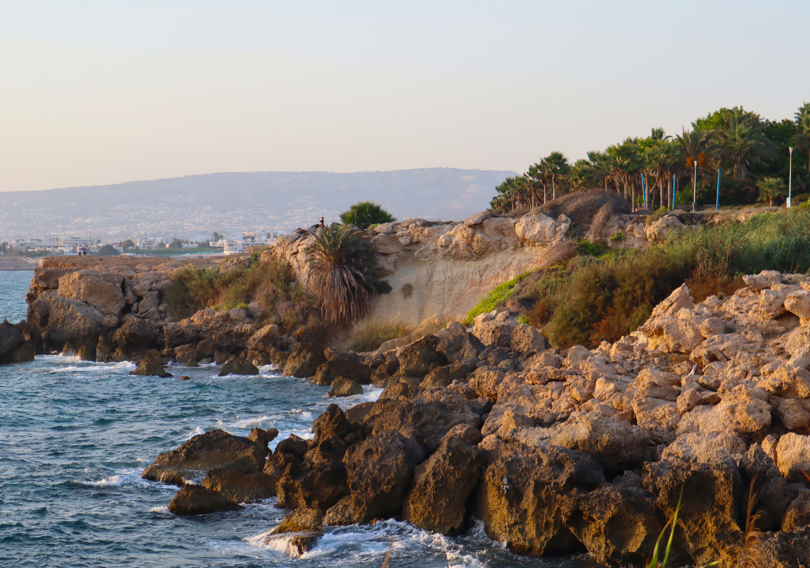
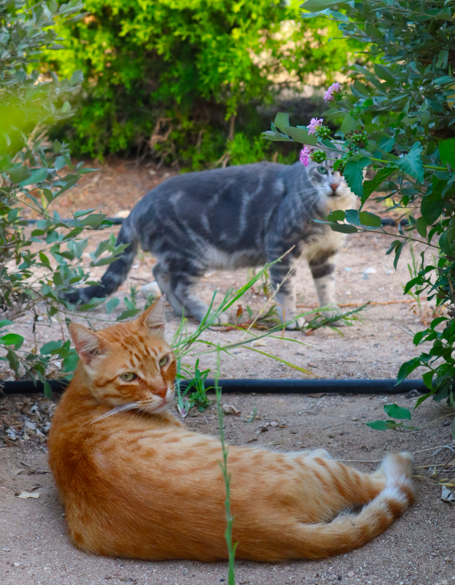
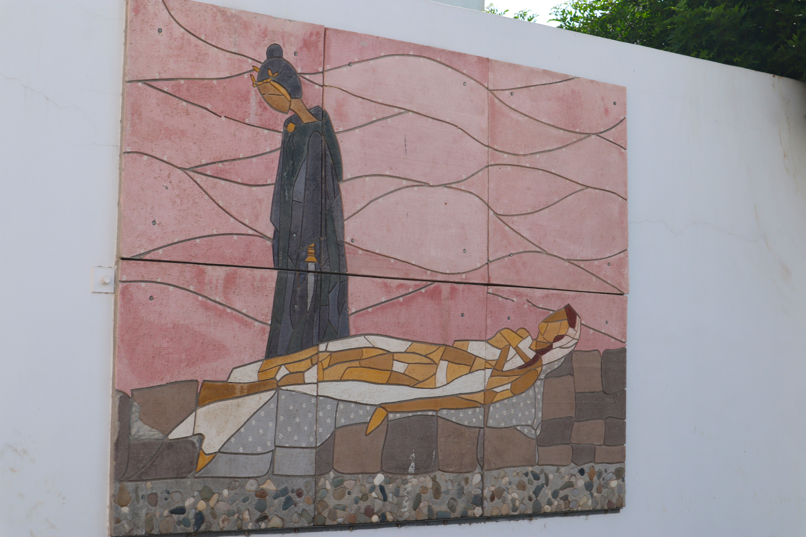
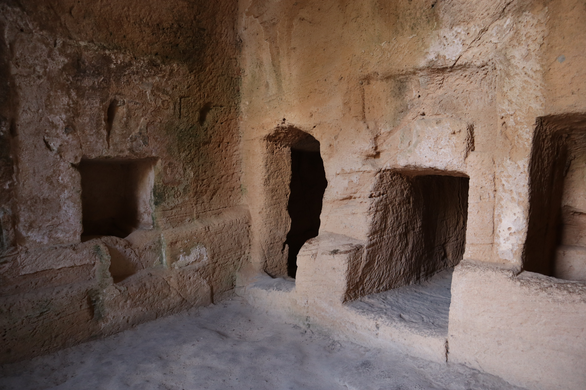
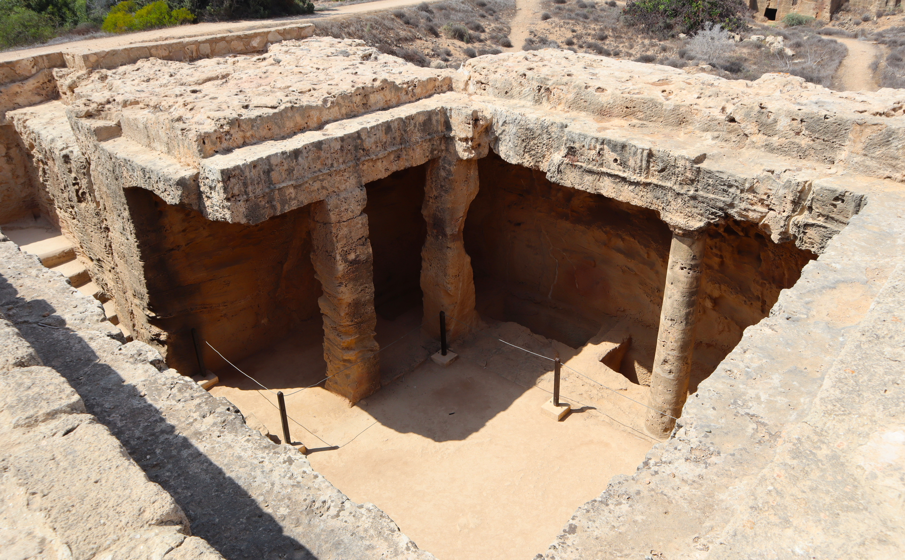
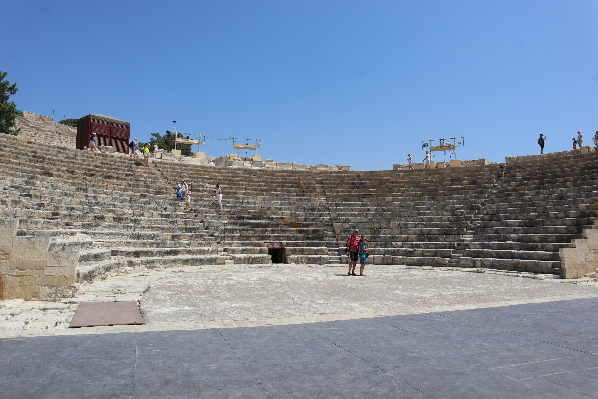
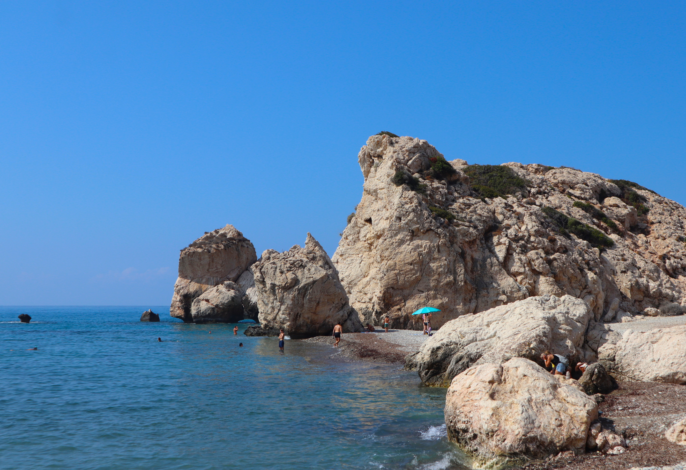
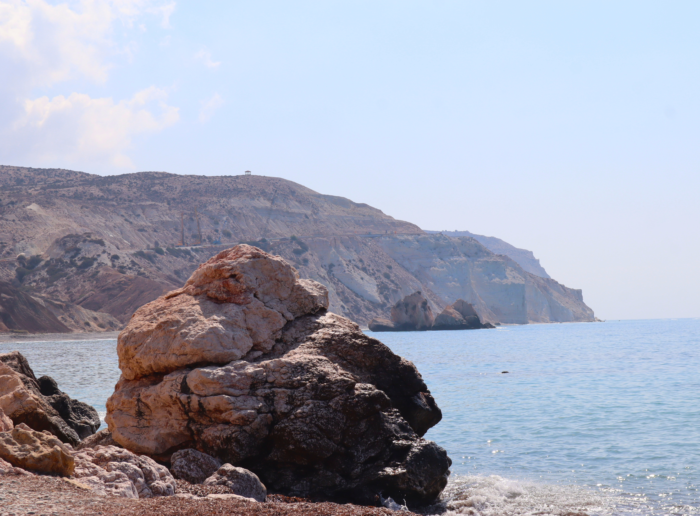
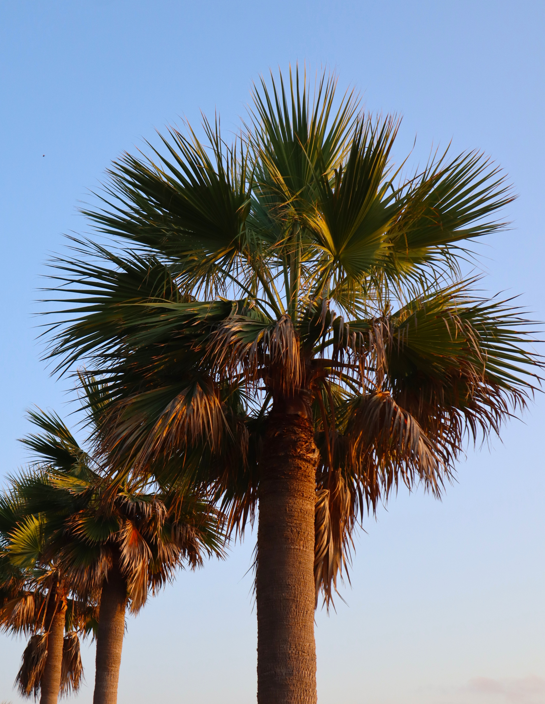
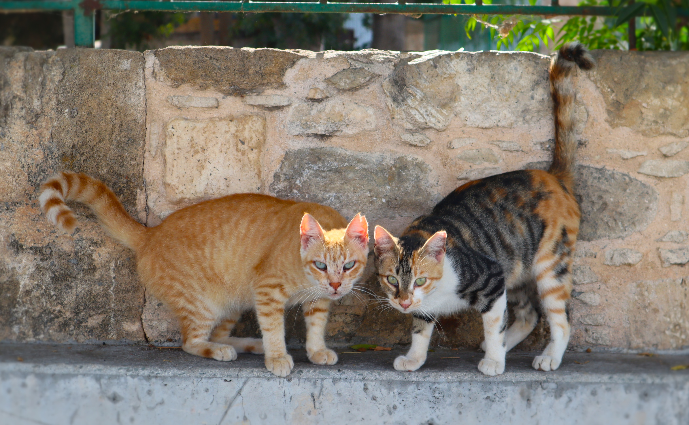

Cyprus: An Island of Cats, Heat, and Ancient Wonders - 08.2024
Table of Contents
- Introduction
- The Cyprus Cat: A Feline Paradise
- Surviving the Cypriot Furnace
- Tombs of (not) the Kings
- Aphrodite's Rock
- Culinary Adventures and Hotel Experiences
- Final Thoughts
Introduction
I've just returned from a vacation in Cyprus and decided to share some cool stories and photos from the trip. After a bit of a hiatus, I set a goal to take 100 photos during my academic vacation. Now, if you're into photography, you probably know that 100 photos is a modest number, maybe unless we're talking about nearly perfect shots that you meticulously edit before posting. But when I set this goal, I wasn't even thinking about post-editing. So... I probably hit that goal within a day. It was enough to remind me of the love for photography that I had somehow lost over time. During this trip, I was determined to take a lot of photos, especially since I'm a big fan of animal photography and Cyprus is called the island of cats.
The Cyprus Cat: A Feline Paradise
There's a special breed of cat in Cyprus called the Cyprus cat, and you can find them everywhere. Unlike my Ragdoll cat, these cats have short hair, and while they might not be small, they're definitely lean. It makes perfect sense, considering they live in what feels like a furnace to me. Sometimes, I felt like I was burning alive. For some people, that might be a plus, but for me? No way. According to some data I found online, there are more cats than people on the island of Cyprus. My only hope is that they're living happy and fulfilling lives. The ones I met were the calmest cats I've ever encountered. They were perfect models, patiently waiting for me to take the photo before casually wandering off.
Surviving the Cypriot Furnace
As I mentioned, this place felt like a furnace to me. I like warmth, but not extreme heat. During a guided tour, our guide mentioned that the official temperatures are always reported as lower than the actual ones because there's a law stating that people can't work when the temperature exceeds 40°C. If they reported the real temperatures, the whole country would have been at a standstill for the past two months. While we were there, she mentioned that it was finally going to drop to a "normal" 35°C. I tried going for a run with my dad one day, but after just 2 km, I decided to stop and walk. It was incredibly tough — harder than the legendary May 2024 Silesia Half Marathon. But the sea was amazing. I spent hours swimming every day, and despite that, the only soreness I felt was in my legs after a 3.5 km run/walk. Looks like I need to hit legs often this season, huh.
Tombs of (not) the Kings
Speaking of photos, I want to share some that capture ancient desert vibes. There wasn't much to see in the area where we stayed, but there were few really cool places worth mentioning. The first is the Tombs of the Kings, which dates back to between the 4th century BCE and the 3rd century CE. Interestingly, despite the name, no kings were buried there—it was a necropolis for high-ranking aristocrats. As a fan of ancient history, visiting this site was a real treat, just like the nearby theatre.


Aphrodite's Rock
The most spectacular place we visited was Aphrodite's Rock. No exaggeration — this is one of the most beautiful landscapes I've ever seen in my life. No photo can truly capture the perfection of the view there; you have to see it in person. According to legend, this is the spot where Aphrodite emerged from the sea to live. Greek mythology is deeply woven into the fabric of Cyprus. Even the city where we stayed, Paphos, was named after the child of Pygmalion, a sculptor who fell in love with a statue he had created. On Aphrodite's festival day, he wished for the statue to become a real woman, and Aphrodite granted his wish. They married and had a child, Paphos.

Culinary Adventures and Hotel Experiences
Just a few random thoughts I jotted down in my notes: the hotel we stayed at was amazing—probably the best hotel I've ever been to (though I won't drop their name since they're not sponsoring this). They clean the rooms every day, better than I do at home — even tidying up my cables to keep them from getting tangled. As I'm considering going vegetarian, I decided to try vegetarian lunches, but it didn't go well. The options for non-meat eaters were pretty boring. I mean, I took a dish called "vegetarian rice," and it was literally just rice — maybe with a tiny bit of onion. That was it, so i quickly dropped the idea. However, the salads were perfect, and I tried nearly all of them over the week. So, you can definitely go with those. But since I'm trying to bulk up, I'll need to plan my diet better. That's a problem for future me.
Final Thoughts
Overall, it was a great trip. There were little to no clouds the entire week, the food was great, and the cats were everywhere. Cyprus is an amazing place to visit — probably even better in the spring when the weather isn't as hot and the plants are blooming.